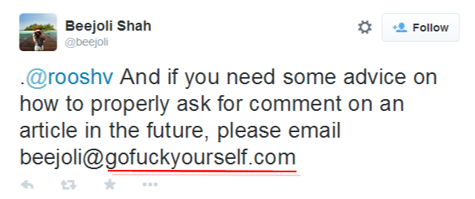
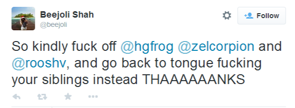

Daryush "Roosh" Valizadeh created ROK in October 2012. You can visit his blog at RooshV.com or follow him on Twitter and Facebook.


(The man who Shah accused has given a statement. Scroll down to the end of this article for that update.)
Not even two weeks after the UVA gang rape story published in the Rolling Stone fell to pieces, the mainstream outlet Buzzfeed has published a rape accusation by freelance writer Beejoli Shah in an article titled How My Culture Failed Me After I Was Raped. Nine years after the fact, Shah details how she was drugged and then raped by an Indian man while she was a freshman at UC Berkeley. In spite of claiming to have evidence from a drug test and rape kit, she did not report the crime to police. Thanks to a reader tip, ROK has discovered the identity of her alleged rapist.
Shah’s accusation fits the pattern of a false accusation that I addressed in All Public Rape Accusations Are False. When a girl avoids going to the police to instead share the story nationally in full public view, there is reasonable suspicion that she is using the accusation to push a false narrative onto the masses, relieve symptoms of mental illness, gain attention and validation, or get revenge on a former lover who didn’t pursue a romantic relationship with her. Shah’s breezy story, which supposedly took place nearly a decade ago, does not offer an especially convincing account, especially since she was flirting with her alleged rapist for weeks before.
Here are some excerpts:
What I didn’t expect was being roofied, not remembering the rest of the night, and waking up in Neil’s bed covered in bruises.
Actually, that’s not entirely true. I remember snippets of the night. I fully remember insisting no alcohol be in my beverage when Neil offered to pour me a mixed drink — a choice integral to my plan of presenting my best self. I remember a very hazy moment: walking down a hill toward Neil’s apartment, daring him to let me wear his shirt. I was definitely drugged by then, but eight years later I remember that brief moment of flirtation I surely was complicit in.
[…]
I do know that when two of [my girlfriends] took one look at my neck, covered from side to side in a macabre grin of angry purple bruises and bite marks, they knew something had happened that wasn’t supposed to. I told them what I remembered from that evening as best I could, and they were incredibly supportive, especially given that none of us had dealt with anything of this nature before in our eight months of friendship. But it also didn’t stop them from asking, “Are you sure you guys didn’t just accidentally hook up last night?” After all, they had seen mine and Neil’s ill-advised flirtations in the weeks prior.
[…]
Neil and I had been flirting here and there in the weeks leading up to the party. If I hazily remembered flirting with him on the walk home, who’s to say I didn’t say no when push came to literal shove? Even though I’d never blacked out, and don’t remember drinking at all, did I maybe just get really drunk? I logically knew the answer to all those questions pointed to no, this wasn’t my fault, but if I couldn’t even believe myself entirely, there was no way I was going to be a believable victim.
The reason that she didn’t want to report the rape is to protect her reputation:
Going to campus police was never an option. It’s not that our Indian community wasn’t having sex, but we sure as hell weren’t talking about it. I wasn’t explicitly talked out of wanting to press charges, but it never even came up in the discussion process of how to move forward. I was worried about others in the Indian scene finding out, and the rumor mill dropping the non-consensual aspect of me having had sex…
Either she was raped by a man who seduced her over an extended period of time and got her to voluntarily come to his apartment (she stated giddiness at the prospect of wearing his shirt), or she felt guilty for sleeping with a senior [removed] too quickly after being dumped by an ex-boyfriend that stated her “liberal” behavior as the main reason. We have no police report, no hard evidence she was drugged, and no account from the alleged rapist. There is one of two things we can conclude about Beejoli Shah’s account:
1. She was raped and because she failed to report the rape, she allowed a rapist to remain on the loose for nearly a decade. We can only speculate at how many more women were raped because Shah didn’t go to the police and experience a few hours of inconvenience to put a dangerous criminal behind bars.
2. She is lying about her rape. The rape did not occur and is instead a revisionist or implanted memory that surfaced because of America’s current hysteria surrounding rape.
Neither of these options paint Shah in a favorable light, but at least the second option would mean that less women have been put in danger. The problem with this less harmful scenario is that Shah gave enough information in her article that her alleged rapist was easily identified by a tipster. Consider these three facts:
A. [removed]
B. [removed]
C. removed]
I have contacted him and am waiting for his reply so I will not go the extra step in publishing his name until he is given a full day to respond. Since Shah’s alleged rapist took only three steps to find, that leaves the responsibility on her to either issue a retraction to her Buzzfeed article so that it no longer points the finger to an innocent man, or to do the right thing for the safety of women everywhere by contacting the police immediately to put this rapist beyond bars before California’s 10-year statute of limitations runs out.
I contacted Shah to confirm or deny that the man I identified above was her rapist, giving her time to respond before this article’s publication, but she gave me a fake email address in response:

And here is a tweet she sent me earlier that urged me to commit incest:

This story comes hot on the heels of Lena Dunham publicly accusing “Barry” of raping her in college in the same memoir where she admits to digitally penetrating her little sister’s vagina. Once Barry was identified, Dunham came out with a retraction (on Buzzfeed, ironically) so that she was not exposed to legal liabilities. We shall see if Beejoli Shah, whose claim to fame is getting her toes sucked by Quentin Tarantino, follows in her footsteps.
Update:
I contacted Shah’s alleged rapist with her accusation. He has vehemently denied that a rape took place:
Unequivocally deny that here was nothing other than consensual activity. I should have said no and refused her oncomingd [sic] as it was clear she was trying to get back at her boyfriend by “hooking up.” I welcome her to go to the police now (and urged her at the time as well) and felt compelled to do so myself at the time once she started mentioning that she didn’t remember anything.
He states that if any drugging occurred, one that has yet to be proved by Shah, it was not done by him:
If for some reason she may have been given something that night it wasnt by me, with my knowledge or even perceptible to me as she was completely coherent (verifiable by friends from undergrad who i stil [sic] know today).
With his strong denial, the onus is on Shah to provide evidence that a rape did indeed take place. Since it doesn’t seem like this will be forthcoming, an impartial observer must now conclude that Shah has falsely accused this man of a horrendous crime for personal gain. It is unknown whether he will pursue civil action against Shah.
Follow-up Article: Buzzfeed Has Removed Several Details Of Beejoli Shah’s Alleged Rape After We Questioned It